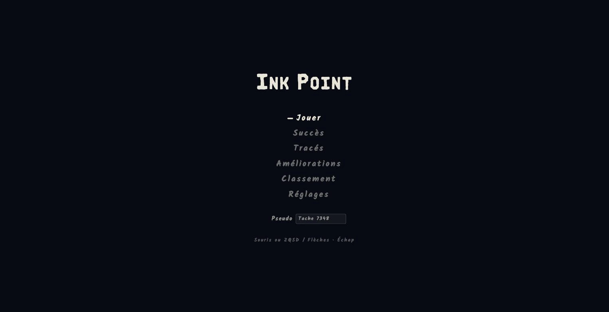
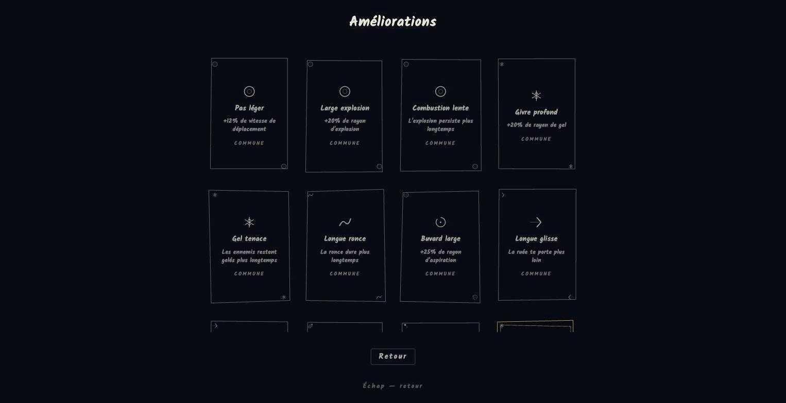
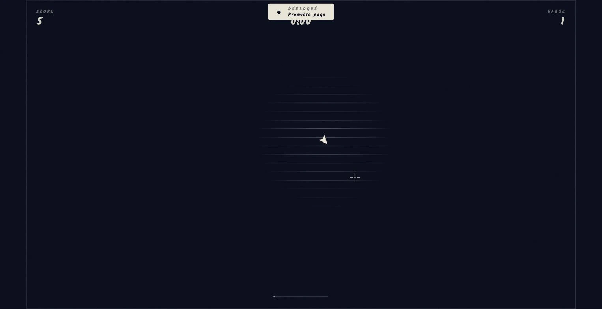

La promesse
Un jeu complet dans un onglet.
Ordinateur, téléphone, manette tactile : Ink Point s’adapte à l’écran et se lance à la seconde. La preuve qu’une expérience de jeu n’a pas besoin d’application pour être prenante.
Lab · Jeu navigateur
Un jeu de survie où vous êtes le curseur, poursuivi par l’encre. Un clic, et ça commence.

Vous êtes votre propre curseur sur une page qui se remplit d’encre. Un contact, et c’est perdu. Toutes les quarante secondes, une carte à choisir parmi trois vient changer les règles. Le pari : un jeu qui démarre en un clic, sans installation, sans compte, sans écran de chargement.
La promesse
Un jeu complet dans un onglet.
Ordinateur, téléphone, manette tactile : Ink Point s’adapte à l’écran et se lance à la seconde. La preuve qu’une expérience de jeu n’a pas besoin d’application pour être prenante.
40
secondes par vague, puis une carte à choisir parmi trois.
8
encres, des pouvoirs déclenchés au simple contact.
23
succès à débloquer au fil des parties.
Rejouable
Trois ennemis, des cartes rares, une mythique par partie : aucune partie ne se ressemble.


Ink Point est en ligne depuis 2021 et continue de s’enrichir. Il montre ce qu’on tire d’un navigateur quand on le pousse.
Jouer à Ink PointRendu Canvas et effets calculés sur la carte graphique : une page web qui tient la cadence d’un jeu.
Sur téléphone, l’arène et les pouvoirs se remettent à l’échelle et l’écran passe en paysage.
Vagues courtes, choix entre chaque, succès à débloquer : la partie suivante démarre toujours.
Les scores remontent sur nos serveurs : la compétition ne s’arrête pas à l’onglet.
Décrivez-le en quelques lignes. Nous répondons sous 48 heures ouvrées, avec des questions, un délai et un ordre de prix.
Nous contacter